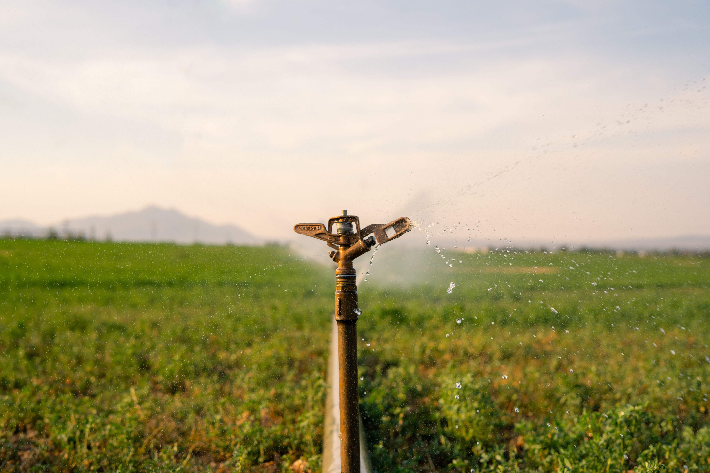
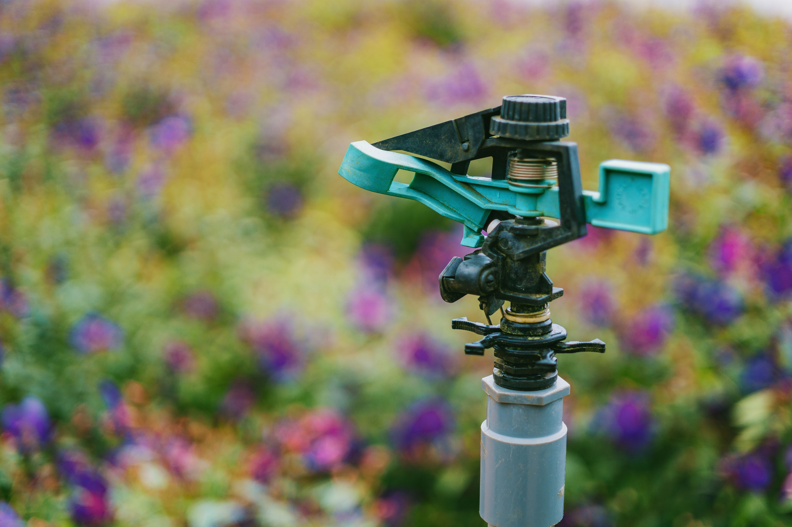
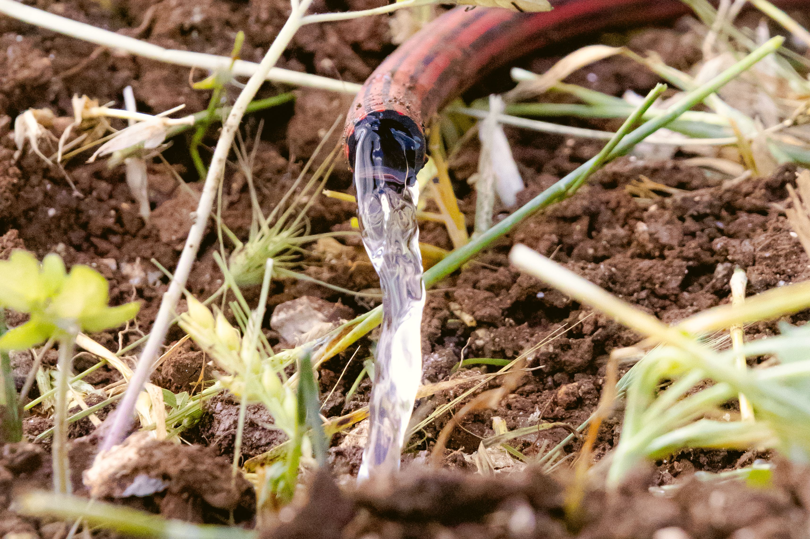

Bem-vindo!
Estamos comprometidos em oferecer soluções de irrigação eficientes e sustentáveis para o seu negócio.
Solicite um orçamento
Sobre a Luz Irrigação
A Luz Irrigação é especializada em soluções completas de irrigação agrícola. Nós ajudamos o produtor a garantir a produtividade da lavoura o ano todo, utilizando tecnologia de precisão para aplicar a quantidade certa de água, economizar recursos e potencializar os resultados no campo.
Nossos Serviços:
-
💧
Instalação de Irrigação
Instalação de sistemas de irrigação eficientes e adequados às necessidades do cliente.
-
🔧
Manutenção
Manutenção e reparo de equipamentos para garantir o bom funcionamento do sistema.
-
🌱
Consultoria
Orientação para melhorar a eficiência da irrigação e reduzir o desperdício de água.
-
💦
Automação
Soluções de automação para facilitar o controle e o gerenciamento da irrigação.
-
🌾
Irrigação Agrícola
Sistemas desenvolvidos para atender diferentes necessidades de produção agrícola.
-
📐
Projetos de Irrigação
Planejamento de projetos de irrigação eficientes, funcionais e sustentáveis.
Por que escolher a Luz Irrigação?
-
Economia de água
Soluções que ajudam a reduzir o desperdício de água.
-
Qualidade
Equipamentos e serviços pensados para oferecer eficiência.
-
Atendimento personalizado
Projetos desenvolvidos de acordo com as necessidades de cada cliente.
-
Sustentabilidade
Sistemas que contribuem para um uso mais consciente dos recursos.
O que nossos clientes dizem
Veja a experiência de quem confia na Luz Irrigação.
⭐⭐⭐⭐⭐
"Excelente atendimento e serviço muito bem feito!"
João Silva
Cliente residencial⭐⭐⭐⭐⭐
"A equipe foi muito atenciosa e resolveu tudo rapidamente."
Maria Oliveira
Cliente residencial⭐⭐⭐⭐⭐
"Fiquei muito satisfeito com o resultado da instalação."
Carlos Santos
Cliente comercialFale conosco
Converse com A Luz Irrigação e solicite seu orçamento
📞 (38) 99999-9999
✉️ contato@luzirrigacao.com
📍 Pirapora - MG
Galeria




Pronto para melhorar sua irrigação?
Entre em contato conosco e descubra a melhor solução para o seu negócio.
Entre em contato